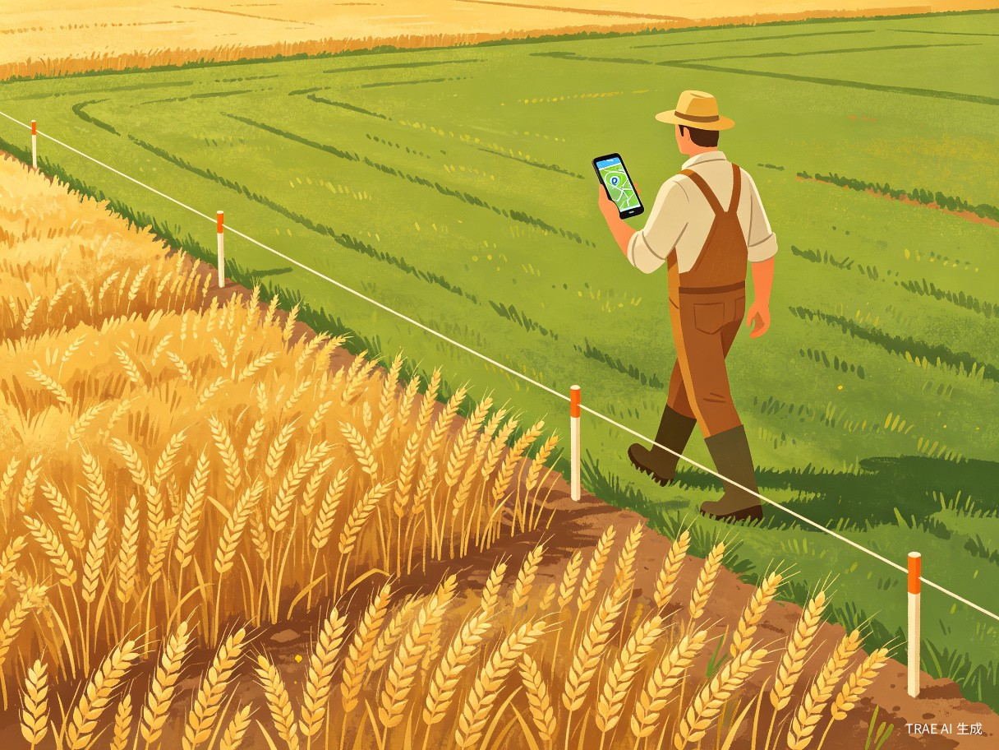

1 创意名称与介绍
1.1 创意名称
足迹绘（FootprintDraw）-- 一个名字融合了"足迹"（探索与记录）和"绘"（测绘与创造）两个核心概念，简洁易记，富有画面感。
1.2 想解决什么问题
用户在日常生活中有三类常见的地图需求，但市面上的产品彼此割裂：
- 收藏常用位置 -- 朋友家、公司、水源地等，方便快速导航，但目前只能依赖微信收藏或备忘录
- 记录到访足迹 -- 点亮世界和城市，获得探索成就感，但高德/百度地图的足迹功能过于简陋
- 测量土地面积 -- 农田、宅基地、山林面积测算，但现有测亩工具功能单一、体验粗糙
足迹绘将三大需求整合到一个轻量微信小程序中，用户无需安装任何 App，打开即用。
1.3 为什么会想到做这个
灵感来源于真实的乡村生活场景：农户需要测量农田面积申报补贴，却找不到好用的免费工具；户外爱好者想记录旅行足迹，却只能在多个 App 间切换；普通用户想收藏朋友家的地址，却只能手动复制粘贴。这些看似不相关的需求，底层都指向同一个核心能力 -- 地图交互。
1.4 产品形态
基于 微信小程序 的地图工具类产品，零安装、零注册门槛，依托微信生态的社交分享能力实现裂变传播。
2 目标用户及痛点
户外爱好者 / 旅游爱好者
- 喜欢探索新地点，希望记录到访足迹
- 追求"点亮世界、城市"的成就感
- 需要将旅行足迹分享到朋友圈
- 痛点：现有地图 App 的足迹功能简陋，无法自定义打卡和生成分享卡片
农户 / 土地管理者
- 需要测量农田、宅基地、山林的面积和边界
- 需要收藏水源、农田、果园等常用位置
- 需要将测绘结果分享给合作方或家人
- 痛点：测亩工具功能单一，无法同时管理位置标记和边界数据
普通用户
- 需要收藏朋友家、公司、常去的店等地址
- 偶尔需要标记一个位置方便下次找到
- 希望快速导航到已收藏的位置
- 痛点：位置信息分散在微信收藏、备忘录、地图收藏等多个地方
工程勘察人员
- 需要快速标记施工现场、采样点
- 需要粗略测量区域范围
- 需要将位置信息分享给团队成员
- 痛点：专业测绘工具成本高、操作复杂，不适合快速标记场景
2.1 典型使用场景
旅行爱好者小赵来到云南大理旅行，打开足迹绘，系统自动识别他到达了大理市，弹出"您来到了大理市，是否点亮该城市？"小赵点击点亮，城市图标在足迹地图上亮起。旅行结束后，他将足迹地图截图分享到朋友圈，展示已点亮的 12 个城市和 3 个国家。
农户老张承包了多块农田，需要测量每块地的实际面积用于申报补贴。他打开足迹绘，选择"走一圈测绘"，沿着田埂走一圈，系统自动记录 GPS 轨迹并计算面积，切换单位为"亩"后保存，方便查看。
村民王先生需要明确自家宅基地的边界范围。他使用"手动画圈"功能，在卫星地图上点击边界拐点，圈出宅基地范围，系统自动计算面积和周长，保存后分享给村委会作为参考材料。
3 价值与意义
效率提升 -- 让测绘变得人人可用
传统土地测绘需要专业设备和人员，成本高、周期长。足迹绘将 GPS 轨迹测绘能力装进每个人的手机，农户只需"走一圈"即可获得精确的面积数据，将测绘效率提升数十倍。
社会价值 -- 助力乡村振兴
面向广大农村用户，提供免费的土地面积测算工具，帮助农户精准申报农业补贴、管理土地资源。结合位置收藏功能，还能管理水源、农田、果园等重要农业设施的位置信息。
商业价值 -- 三合一的差异化定位
目前市场上没有一款产品同时覆盖"位置收藏 + 足迹点亮 + 地块测绘"三大场景。足迹绘的差异化定位填补了这一空白，一个工具解决三类需求，降低用户使用门槛，提高粘性和留存。
创新价值 -- AI 赋能地图交互
通过 TRAE IDE 辅助开发，实现了高效的项目搭建。产品本身也体现了 AI 时代的理念：用技术降低创造门槛，让非技术背景的用户也能完成专业级的地图标记和测绘操作。
4 核心功能亮点
4.1 三大核心模块
4.2 模块一：位置收藏
基于当前位置快速保存标记点，支持名称、标签、备注等信息。9 种预设标签（农田、房屋、道路、水源、树木等）覆盖常见场景，还支持用户自定义标签。
- 一键添加：首页底部"添加标记"按钮，获取当前位置坐标，填写信息后保存
- 智能识别：保存后自动触发逆解析，识别国家/城市信息
- 标签筛选：横向滚动标签栏，快速筛选不同类型的标记
- 快捷导航：列表页一键打开微信内置地图导航
4.3 模块二：足迹点亮
面向户外爱好者的探索成就系统，基于 GPS 定位和逆解析自动识别国家/城市，提供"点亮"成就体验。
- 自动识别：到达新城市时自动弹出点亮提示，支持跳过后下次再点亮
- 国家/城市列表：按层级展示已点亮的国家和城市，城市可展开查看每次到访记录
- 时光轨迹：将打卡签到、景点打卡、点亮记录合并为按日期分组的时间线
- 景点打卡：独立的景点打卡弹窗，支持名称、备注、照片，集成周边 POI 推荐
- 分享卡片：Canvas 2D 绘制动态分享图，一键保存到相册或分享到微信好友/朋友圈
4.4 模块三：地块测绘
面向农户和土地管理者的专业级测绘工具，支持 GPS 走圈测绘和手动画圈两种方式。
- 走一圈测绘：GPS 持续定位，沿地块边界行走，实时显示轨迹点数、总距离、预计面积、精度、速度
- 手动画圈：在卫星地图上点击边界拐点，手动绘制闭合多边形或折线
- 智能算法：Douglas-Peucker 轨迹抽稀、Haversine 距离计算、鞋带公式面积计算
- 多单位切换：支持平方米、亩、公顷、平方公里四种面积单位自动格式化
- 5 种颜色：不同地块可用不同颜色区分，便于管理

5 技术方案
5.1 技术栈
5.2 架构设计
产品采用清晰的分层架构，确保代码可维护性和可扩展性：
| 层级 | 模块 | 职责 |
|---|---|---|
| 页面层 | 7 个页面（4 Tab + 3 跳转） | 首页、足迹页、列表页、我的页、添加标记、走一圈测绘、手动画圈 |
| 组件层 | Map / SaveDialog / LightUpDialog / TagFilter / ShareCard 等 | 可复用的 UI 组件，封装交互逻辑 |
| 状态管理 | Zustand Store（5 个独立 Store） | 标记点、边界、标签、用户、地址的状态管理与持久化 |
| 服务层 | API 服务 / 逆解析 | 腾讯位置服务 API 调用、地址逆解析、缓存管理 |
| 工具层 | geo.ts / storage.ts / format.ts | 地理计算、存储封装、格式化工具 |
| 类型层 | types/index.ts | Marker / Boundary / LitLocation / SpotCheckin 等数据类型定义 |
5.3 核心算法
Haversine 距离计算
基于球面三角学的两点间距离计算公式，精度适用于短距离 GPS 定位场景，用于实时计算轨迹总距离。
鞋带公式面积计算
将经纬度转换为平面坐标（取多边形中心点为参考），使用鞋带公式计算多边形面积，结果精确到平方米。
Douglas-Peucker 轨迹抽稀
对 GPS 轨迹点进行智能抽稀，在保留关键拐点的同时去除冗余点，容差 2m，确保测绘精度和性能平衡。
腾讯逆地理编码
通过腾讯位置服务 API 将坐标转换为结构化地址信息（国家/省份/城市/区县/街道），支持 24h 内存缓存。
5.4 数据存储方案
当前版本采用纯本地同步存储方案，使用 Taro.setStorageSync / getStorageSync，数据完全存储在用户设备，保障隐私安全。
| 存储 Key | 数据类型 | 说明 |
|---|---|---|
| markers | Marker[] | 所有标记点 |
| boundaries | Boundary[] | 所有地块边界 |
| litLocations | LitLocation[] | 国家/城市点亮记录 |
| spotCheckins | SpotCheckin[] | 景点打卡记录 |
| customTags | CustomTag[] | 用户自定义标签 |
| userInfo | User | 当前登录用户信息 |
| tempTrackPoints | Point[] | 临时测绘轨迹缓存 |
6 产品创新点
6.1 三合一差异化定位
市面上没有一款产品同时覆盖"位置收藏 + 足迹点亮 + 地块测绘"。足迹绘将三类需求整合到一个共享地图底座上，三大模块共享标签体系和状态管理，用户无需在多个 App 间切换。
6.2 零门槛体验
基于微信小程序，无需安装、无需注册即可使用核心功能。所有数据存储在本地，离线也可使用标记、测绘、点亮等核心功能，仅逆解析和分享依赖网络。
6.3 智能点亮机制
独创的"点亮"系统：用户在添加标记、保存边界或打卡签到时，系统自动通过逆解析识别国家/城市，首次到达时弹出点亮提示。不强制点亮，跳过后下次仍会提示。点亮状态永久有效，不随标记删除而取消。
6.4 专业测绘算法
将 Haversine、鞋带公式、Douglas-Peucker 等专业地理计算算法封装为易用的工具库，支持平方米/亩/公顷/平方公里四种单位自动格式化，精度过滤（<=20m/<=50m/<=100m 三档可调），距离过滤（最小 2m），确保测绘结果的准确性。
6.5 社交裂变设计
深度集成微信生态的分享能力：支持转发好友、分享到朋友圈、复制到剪贴板、Canvas 2D 生成分享卡片图片。用户可以将足迹成就、测绘结果一键分享，实现自然增长。
7 竞品分析
| 维度 | 足迹绘 | 高德地图足迹 | 土流网测亩仪 | 微信位置收藏 |
|---|---|---|---|---|
| 位置收藏 | 支持 | 部分支持 | 不支持 | 基础支持 |
| 足迹点亮 | 支持（国家/城市） | 基础足迹 | 不支持 | 不支持 |
| GPS 测绘 | 支持（走圈+手画） | 不支持 | 支持 | 不支持 |
| 面积计算 | 4 种单位 | 不支持 | 支持 | 不支持 |
| 标签分类 | 9 种预设 + 自定义 | 不支持 | 不支持 | 不支持 |
| 微信分享 | 深度集成 | 支持 | 不支持 | 支持 |
| 安装门槛 | 零安装（小程序） | 需安装 App | 需安装 App | 微信内置 |
| 离线可用 | 核心功能离线 | 需联网 | 需联网 | 需联网 |
8 AI 辅助开发历程
足迹绘从创意到落地，全程使用 TRAE IDE 辅助开发，充分体现了"AI 赋能创造"的大赛理念。
创意梳理阶段
通过 TRAE Work 对话，梳理产品定位、目标用户、核心功能，形成结构化的产品方案。AI 助手帮助从模糊的想法中提炼出清晰的三大模块架构。
技术选型阶段
AI 助手根据产品需求推荐技术栈：Taro 3.x + React + TypeScript + Zustand，并说明各选型的理由和优劣对比。
项目搭建阶段
通过 TRAE IDE 的 AI 对话，快速生成项目目录结构、配置文件、基础组件骨架。从零到可运行的原型仅用数小时。
功能开发阶段
逐模块实现功能：先完成地图底座和标记系统，再开发测绘功能（含 GPS 轨迹记录），最后实现足迹点亮和分享功能。AI 辅助编写地理计算算法、状态管理逻辑和 UI 组件。
优化与完善
AI 辅助进行代码审查、性能优化和边界情况处理，确保产品在各种使用场景下的稳定性和准确性。
9 未来规划
| 优先级 | 特性 | 说明 |
|---|---|---|
| P0 | 云端同步 / 账号体系 | 接入微信云开发，实现跨设备数据同步与备份 |
| P1 | 数据导出（JSON / CSV） | 提供"导出数据"入口，支持文件保存和分享 |
| P1 | 多端 Map 适配层 | 抽象微信小程序 Map 与 H5 腾讯地图 JS API，便于多端部署 |
| P1 | 照片上传与管理 | 标记/边界/打卡点的照片上传，使用 chooseMedia + 压缩 |
| P2 | 地图图层切换 | 支持卫星图 / 标准图切换 |
| P2 | 统计与成就系统 | 按国家/城市维度展示点亮进度条、热力图 |
| P2 | AI 智能推荐 | 基于用户足迹数据，AI 推荐附近景点和路线 |
10 总结
足迹绘是一款用 AI 重新定义地图交互的微信小程序产品。它将位置收藏、足迹点亮、地块测绘三大场景整合到一个轻量工具中，面向户外爱好者、农户、普通用户和工程人员四大群体，提供零门槛、离线可用、社交友好的地图工具体验。
产品从创意到落地全程使用 TRAE IDE 辅助开发，充分体现了"世界很大，放手去造"的大赛精神。我们相信，AI 正在降低创造的门槛，让更多普通人能够将想法变成可运行、可体验的产品。
足迹绘 -- 让每一位用户都能用一个工具完成"收藏位置、点亮世界、测绘土地"三大需求。世界很大，放手去造！